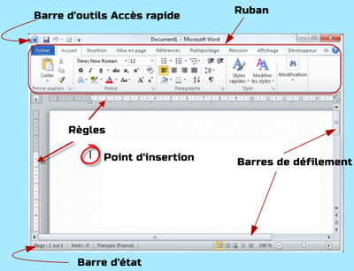
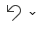

I) La fenêtre de l’application

1. La barre d’outils Accès rapide
Par défaut contient trois icônes :
| Enregistrer |
Enregistrer le document en cours d'édition |
|
Annuler |
 |
Annuler la ou les dernières actions |
Répéter |
Répéter la ou les dernières actions |
2. Le ruban
Le Ruban est constitué d'onglets:
■ L’onglet Accueil: Contient des commandes qui permettent de mettre un texte en forme
■ L’onglet Insertion: Permet d'insérer des objets, des images, des tableaux et des zones des textes ……
■ L’onglet mise en page: Contient toutes les commandes nécessaires pour mettre en forme vos documents au niveau Page.
■ L’onglet référence: Insérer une note de bas de page, un table des matières, un index, …
■ L’onglet Affichage: Permet de basculer entre les affichages du document
■ L’onglet révision: Permet de vérifier la grammaire et l’orthographe du texte, de choisir la langue de saisie et insérer des commentaires…..
3. La Barre d’état
Située dans la partie inférieure de la fenêtre, elle accueille les statistiques du document, la langue du document et les différents types d’affichages
4. La Barre de défilement
- Une barre de défilement horizontale: Permet à l'utilisateur de faire défiler le contenu d'une fenêtre vers la gauche ou la droite.
- Une barre de défilement verticale: Permet à l'utilisateur de faire défiler le contenu d'une fenêtre vers le haut ou vers le bas.
5. Les règles
Les règles de Word vous permettent de contrôler les marges de votre page et l’indentation des paragraphes. Ils sont parfaits pour aligner précisément des images, du texte et d’autres éléments.
Remarque:
Si les règles ne sont pas activées vous pouvez cliquer sur«affichage» Dans la section«Afficher», activer activez l’option «Règles».